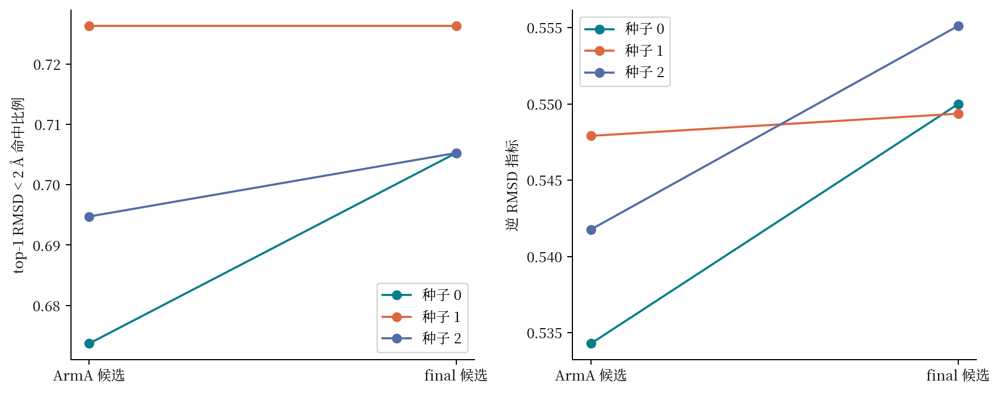
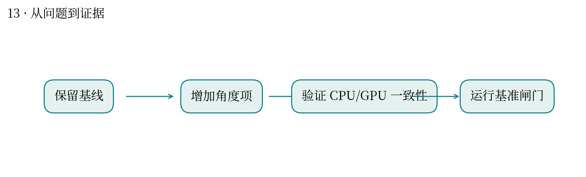
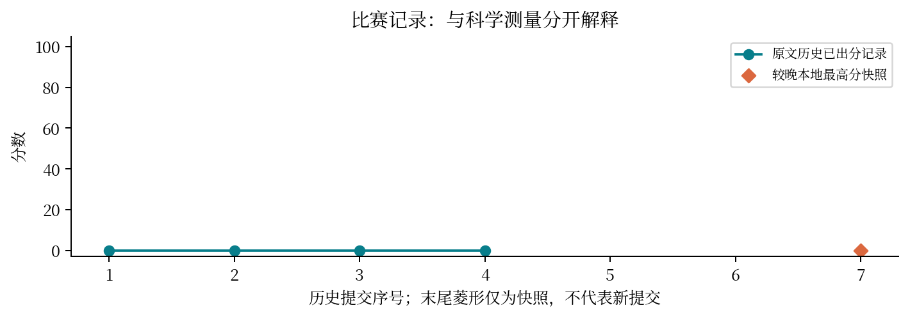

现实中想解决什么：药物筛选时，软件能否把分子在蛋白口袋中的姿势排得更准？
从计算到应用：氢键方向评分 → 结合姿势排序 → 优先选择值得进一步验证的候选。
这次实际做到哪一步：本题比较候选版本的已知姿势重现率；RMSD 命中率改善约 1.40 个百分点。
还缺什么：姿势准确不等于药效好。还需独立测试、结合与活性实验、选择性及其他药物性质评估。
氢键不仅要靠得近，还要方向合适。
最高分快照：0.0 · 2026-10-12T01:11:24+08:00
距离型打分容易忽略供体、受体的相对方向。题目要求将方向项加入分子对接，同时维持 CPU 与 GPU 的一致行为。
修改方向氢键项并验证 CPU/GPU 路径。读取 ArmA 与 final 两版 metrics.json：同为 95 个体系、种子 0/1/2，逐体系 top-1 RMSD 可独立重算。
两版本地 RMSD<2 Å 命中率均值为 69.82% 与 71.23%，相差 1.40 个百分点；逆 RMSD 指标均值为 0.5413 与 0.5515。两者是候选版本对照，不能冒称原版软件对照，也不能用三种子差异声称统计显著。
只改 CPU 评分而未改 GPU 搜索会出现“评价函数”和“优化函数”不一致；编译通过也不证明对接精度提升。
像训练和预测使用不同特征标准化：两边各自能跑，整体仍不一致。你在模型评价和流水线维护中可用同类端到端检查。
2026-10-12 01:42 平台快照：52925/54000/54386/54387 标记最终 0 分且执行失败，无可见日志；54862/56076 明确待人工评审。平台资源限制解释了后两笔延期，不能据此确定前四笔的全部失败原因。局部对接指标不等于 G0–G5 全部验收或隐藏集增益。



| attempt | 提交时间 | 分数 | 状态 |
|---|---|---|---|
| 52925 | 10-11 05:21:59 | 0.0 | 已出分 |
| 54000 | 10-11 12:36:57 | 0.0 | 已出分 |
| 54386 | 10-11 15:05:10 | 0.0 | 已出分 |
| 54387 | 10-11 15:05:13 | 0.0 | 已出分 |
| 54862 | 10-11 17:17:34 | — | 失败 |
| 56076 | 10-11 19:46:27 | — | 失败 |
源文件 SHA256 见 证据清单；用 scripts/build.py 重建图表。